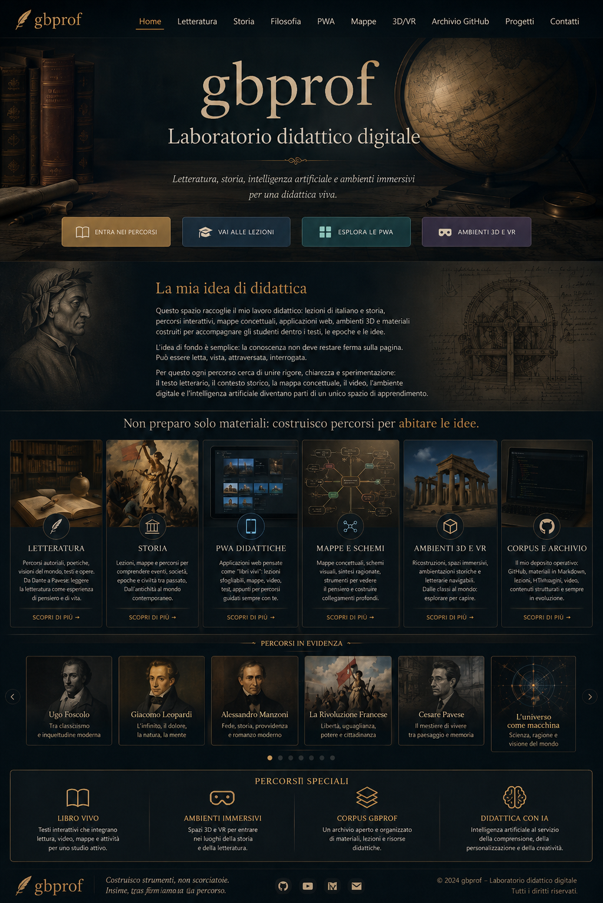

⌬
Repository principali
Percorsi di letteratura, storia, filosofia, PWA e ambienti digitali.

Il retrobottega del laboratorio.
Qui confluiscono materiali, codice, immagini, lezioni, PWA e risorse in evoluzione. L’archivio non è un magazzino morto: è una struttura di lavoro.
Inserisci qui i collegamenti ai repository, alle cartelle principali e alle versioni pubblicate su GitHub Pages.
Percorsi di letteratura, storia, filosofia, PWA e ambienti digitali.
Lezioni, mappe, dispense, immagini e file di supporto.
Link alle versioni online dei percorsi già pubblicati.
Questa pagina contiene segnaposto: va completata con i link reali ai tuoi repository.